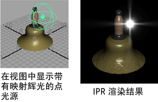
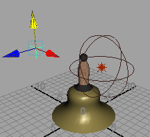
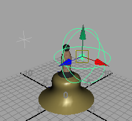
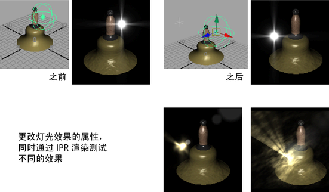

可以向任何灯光添加光学效果。
提示： 在场景视图中看不到应用到灯光的光学效果（如火焰）的结果。
若要查看结果，请 IPR 渲染该效果，然后围绕渲染对象拖动蚂蚁线，以观察进行调整时效果如何变化。
相关主题
创建灯光光学效果
- 创建要为其应用和定位光学效果的灯光。
- 在灯光的“属性编辑器”(Attribute Editor)中，将“光学效果”(Optical FX)工具映射到其中一个灯光属性（例如，单击“颜色”(Color)旁边的框，然后在“创建渲染节点”(Create Render Node)窗口中，从“Maya > 辉光”(Maya > Glow)中选择“光学效果”(Optical FX)）。
- IPR 渲染场景以查看光学效果。

此简短视频演示如何使用 IPR 过程调整光学效果。
重新定位光学灯光效果
可以移动已附加到灯光的辉光或光晕，或者在场景中包含多个光学效果。
重新定位光学效果工具节点
- 创建“定位器”(Locator)并将其放置在场景中的任意位置（“创建 > 定位器”(Create > Locator)）。

- 按住 Shift 键并在视图中选择定位器，然后选择灯光。

现在可以将定位器移动到场景中的任意位置，光学灯光效果会随之移动。
